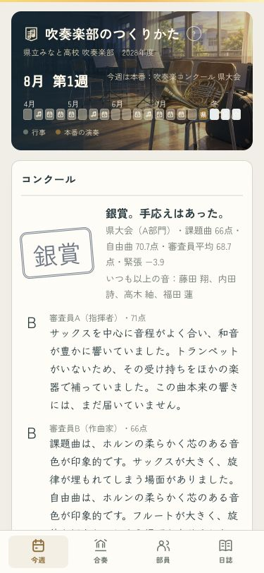
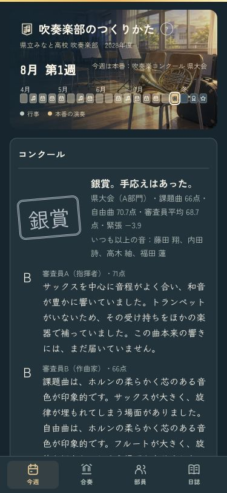

練習と人選が、大会の点につながる
2・3年目に点が高くなりすぎる曲の採点係数を調整しました。音・部員の成長・星による譜読みの時間差は保ちます。保存済みの点・賞も残ります。
確認用画面は、いつものセーブや設定を書き換えません。
実際に3年進めた結果 · 375px
ライト
ダーク
全15曲を、同じ10組で比較
県大会の平均点。上が調整後、下が調整前。目安は1年目37〜47点、2年目55〜67点、3年目65〜75点です。自動練習・おすすめの人選・指揮なしで確認しました。
別の10組でも確認
全曲の記録 · 音・成長・過去の結果の確認 · 人選と厚みの確認